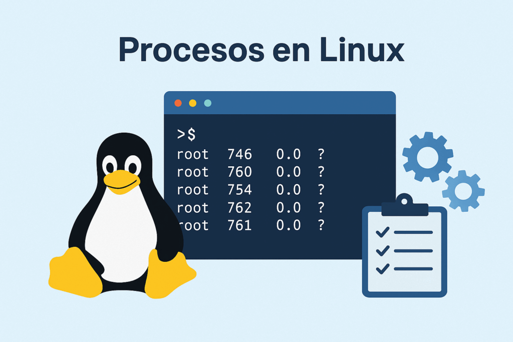
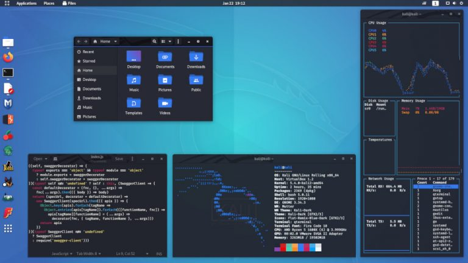

1. Explicación del Concepto: Origen y Filosofía del Código Abierto
Linux nació en 1991 cuando un estudiante universitario llamado Linus Torvalds decidió crear un núcleo (kernel) de sistema operativo libre y gratuito, basado en Unix.
A diferencia de Windows o macOS, Linux se basa en la filosofía del Open Source (Código Abierto), lo que significa que cualquier persona o empresa en el mundo puede ver cómo está hecho, modificarlo, mejorarlo y distribuirlo libremente.
Debido a su naturaleza modular, Linux no viene en una sola presentación. Existen diferentes "sabores" conocidos como Distribuciones (Distros), las cuales adaptan el sistema operativo para distintos tipos de usuarios, hardware y necesidades específicas, compartiendo todas el mismo núcleo central.

2. Ejemplo Práctico: Tipos de Linux y sus Aplicaciones Reales
Para entender el ecosistema de Linux, podemos dividir sus aplicaciones según el entorno donde se ejecutan de forma estratégica:
Entorno de Servidores
Aquí es donde Linux domina el mundo. Versiones enfocadas en estabilidad y seguridad como Red Hat Enterprise Linux (RHEL), Rocky Linux o Ubuntu Server son las encargadas de hacer funcionar los servidores web, bases de datos y la nube global.
Uso Personal y de Escritorio
Para ingenieros y desarrolladores que buscan un sistema robusto para el día a día, la opción más famosa es Ubuntu Desktop. Es intuitivo, cuenta con un enorme soporte de la comunidad y es ideal para entornos de programación locales.
Optimización e Inteligencia Artificial
Linux permite una personalización total eliminando servicios innecesarios en segundo plano, reviviendo laptops antiguas. Además, hoy integra asistentes de IA en la terminal y herramientas avanzadas de compatibilidad para ejecutar software nativo de otros sistemas.

Gestión remota de servidores mediante la interfaz de línea de comandos (CLI).

Personalización del entorno gráfico optimizado para el desarrollo de software.
3. Reflexión Personal
¿Por qué elegí este tema?
Elegí Linux porque durante mis prácticas profesionales estuve en un área de TI que gestionaba los servidores con este sistema operativo, lo que despertó profundamente mi interés por entender su administración. Además, tengo la motivación personal de participar activamente en la instalación y configuración de Linux en mis propios equipos, ya que me atrae enormemente la capacidad de personalizar cada rincón del sistema y optimizar al máximo el rendimiento y los recursos de mi laptop, algo que los sistemas comerciales cerrados no permiten.
¿Dónde se aplica y su valor profesional?
Como futuro Ingeniero en Sistemas, el dominio de Linux no es opcional, es una competencia indispensable. Se aplica en la administración de servidores, la ciberseguridad, la gestión de redes y el despliegue de aplicaciones modernas. Saber moverse con fluidez en la terminal de Linux abre las puertas a los puestos más competitivos en el área de infraestructura tecnológica y operaciones globales (DevOps).